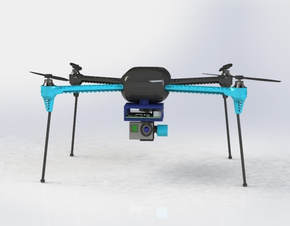
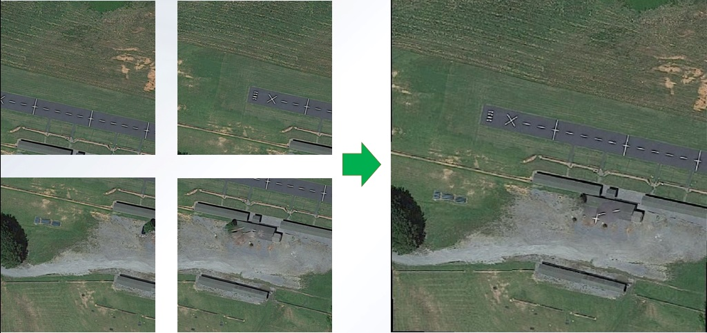
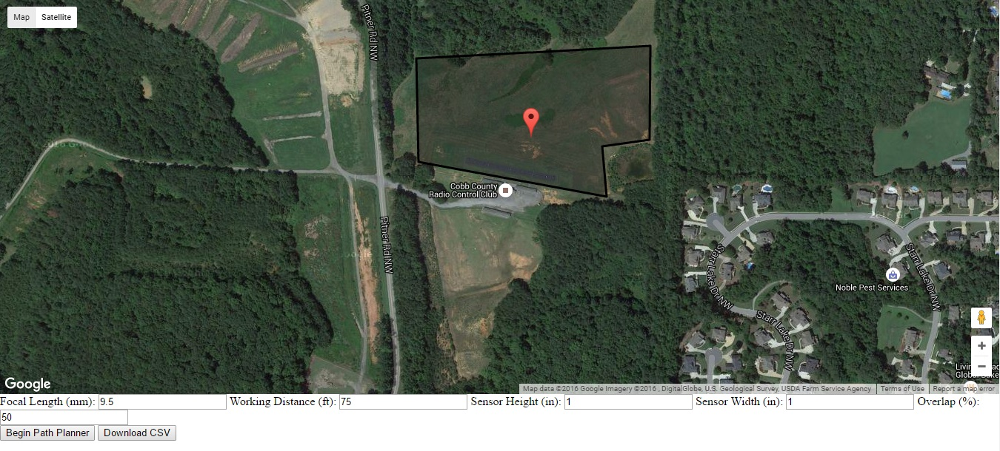
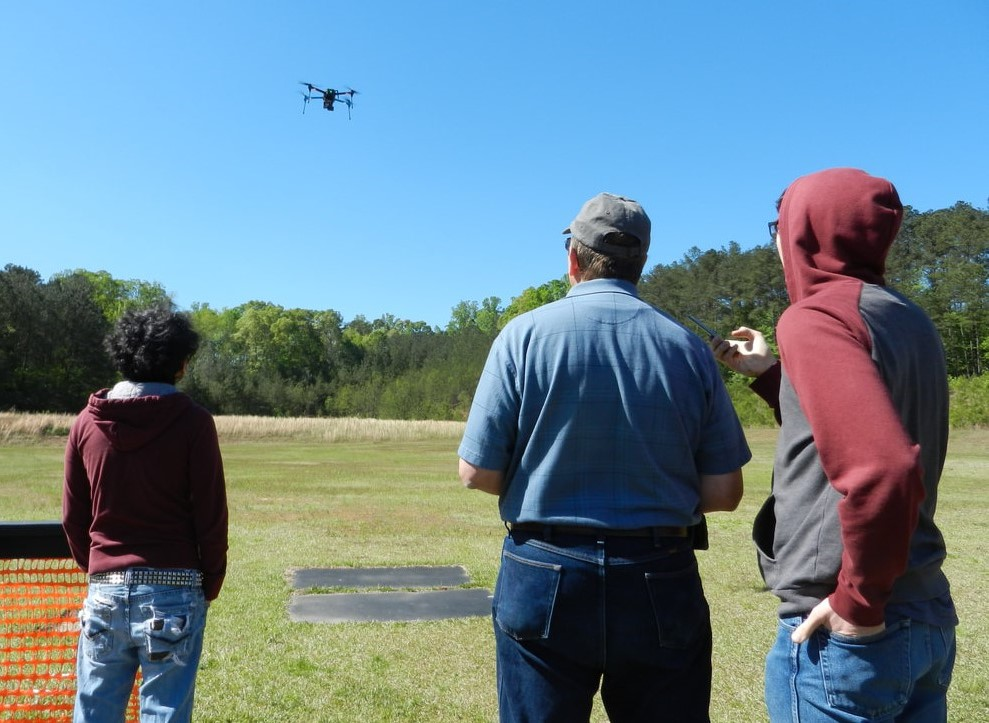

I led a team to design, prototype, and verify a turnkey aerial imaging system for the Georgia Tech Senior Capstone Design challenge in Spring 2016. The project sponsor, the Brown Water Group, is currently conducting sanitation studies in informal communities in Maputo, Mozambique, but was unable to calculate the population densities of the studied communities, an essential measure for their study. While the Brown Group is currently able to measure the population of the communities via a census, they are unable to use either ground-based or satellite-based methods to measure compound areas, the land area of individual homes.
In this project, my team developed a drone-based imaging system that can quickly and accurately create a composite aerial photo of the area being studied from which compound area may be measured. The delivered system includes a hardware flight system based on a 3DR IRIS+ and uses a GoPro Hero4 to capture a large number of images that may be stitched together to create a composite photo. Further, we developed a software suite that allows users to plan flights over a desired area, stitch large numbers of captured photos into one high-resolution composite photo, and accurately measure area from the composite photo.
 We verified our system by flying it at Cobb County RC field. The drone system followed a series of user-generated flight paths and demonstrated a variety of safety features such as auto-landing and come-home commands to ensure the system will remain under the control of the operator in emergency situations. In addition, the image-stitching and area measurement software was verified using sample images generated from the Google Maps aerial photography dataset.
You can download the full project report here. All of our software is open source on GitHub.
